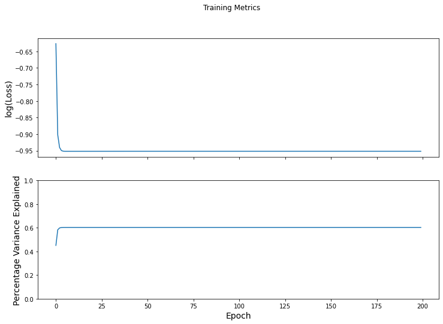
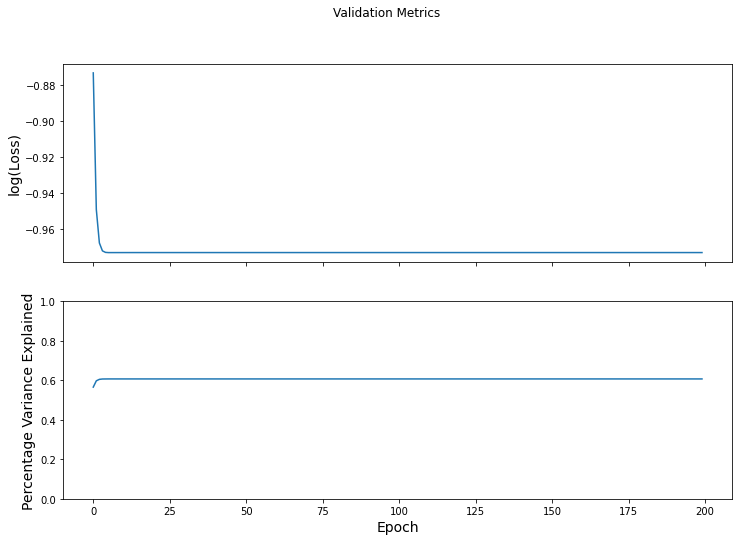

Linear Regression for timeseries simulation¶
Here, the predicted timepoint is expressed as a linear combination of the past \(k\) timepoints. The model is: \( \begin{bmatrix} | \\ \textbf{x}_{t} \\ | \end{bmatrix}_{\text{\#ROI} \times 1} = % \begin{bmatrix} | & & |\\ \textbf{x}_{t-1} & \cdots & \textbf{x}_{t-k} \\ | & & | \end{bmatrix}_{\text{\#ROI} \times k} % \begin{bmatrix} w_{1} \\ \vdots \\ w_{k} \end{bmatrix}_{k \times 1} + % \begin{bmatrix} b_{1} \\ \vdots \\ b_{\text{\#ROI}} \end{bmatrix}_{\text{\#ROI} \times 1} \)
Load data¶
# Load dataset
X, X_len, clip_y, num_subjs, num_clips = get_data()
# clip names
clip_name_to_idx = _get_clip_labels()
clip_idx_to_name = {v: k for k, v in clip_name_to_idx.items()}
clip_idx_to_name[0] = clip_idx_to_name[0][:-1] # get rid of run number in test-retest
clip_names = list(clip_idx_to_name.keys())
# # Pad each time-series with zeros to equalize lengths
# X = pad_data(X)
# Fix a clip for simulating its trajectory
clip_num = 4
X_clip = [X[i] for i in range(len(clip_y)) if clip_y[i] == clip_num]
y_clip = [clip_y[i] for i in range(len(clip_y)) if clip_y[i] == clip_num]
loading run 1/1
Create graphs from data¶
Here we use a history of length k = 5.
# Create data
X = []
y = []
# Length of memory/history of data-sequence
k = 5
for idx_subj in range(num_subjs):
x = X_clip[idx_subj]
for idx_tp in range(k, x.shape[0]):
x_tp = x[idx_tp - k : idx_tp, :]
y_tp = x[idx_tp, :]
X.append(x_tp)
y.append(y_tp)
y = np.array(y)
X = np.array(X)
Performance evaluation¶
Model training¶
# Train, test split
num_X = len(X)
num_train = round(0.8 * num_X)
num_val = 0 * num_X
num_test = num_X - num_train - num_val
num_splits = 1
test_accuracy_results = []
for idx_split in range(num_splits):
# Create split
train_G, train_y, val_G, val_y, test_G, test_y = train_val_test_split(X,
y,
num_train,
num_val,
num_test)
# model = snt.nets.MLP(output_sizes=[300])
model = LinearRegression(output_size=train_G.shape[2],
k=k)
default_slice = lambda x, start, end : x[start : end, ...]
NLNN_simulator = base_model(task_type="regression",
model=model,
loss_object=tf.keras.losses.MeanSquaredError(),
optimizer=tf.keras.optimizers.Adam(learning_rate=0.001),
eval_metric=tfa.metrics.RSquare(),
eval_metric_name="% var explained",
batch_size=16,
slice_input=default_slice)
results = NLNN_simulator.fit(train_X=train_G,
train_Y=train_y,
val_X=test_G,
val_Y=test_y,
num_epochs=200)
print(X.shape, NLNN_simulator.model.beta.shape, NLNN_simulator.model.bias.shape)
(10560, 5, 300) (5,) (300,)
train_loss_results = results[0]
train_pve_results = results[1]
test_loss_results = results[2]
test_pve_results = results[3]
# Training metrics
fig_tr, axes = plt.subplots(2, sharex=True, figsize=(12, 8))
fig_tr.suptitle('Training Metrics')
axes[0].set_ylabel("log(Loss)", fontsize=14)
axes[0].plot(np.log(train_loss_results))
axes[1].set_ylabel("Percentage Variance Explained", fontsize=14)
axes[1].set_xlabel("Epoch", fontsize=14)
axes[1].set_ylim([0, 1])
axes[1].plot(train_pve_results)
plt.show()
# Validation metrics
fig_val, axes = plt.subplots(2, sharex=True, figsize=(12, 8))
fig_val.suptitle('Validation Metrics')
axes[0].set_ylabel("log(Loss)", fontsize=14)
axes[0].plot(np.log(test_loss_results))
axes[1].set_ylabel("Percentage Variance Explained", fontsize=14)
axes[1].set_xlabel("Epoch", fontsize=14)
axes[1].set_ylim([0, 1])
axes[1].plot(test_pve_results)
plt.show()

